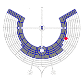

< prev
| 2 of 23 | next >
Home Sweet Home
This is Shade Structure No.1 at our camp, fondly called
the Orphanage because we were all originally slated to be part of
another camp. We took in all needy stragglers.
Most of the daytime was spent lounging around in the
shade, talking with camp mates, and watching the various spectacles
go by on Dogma Street. We were camped right about here (red dot):
 |